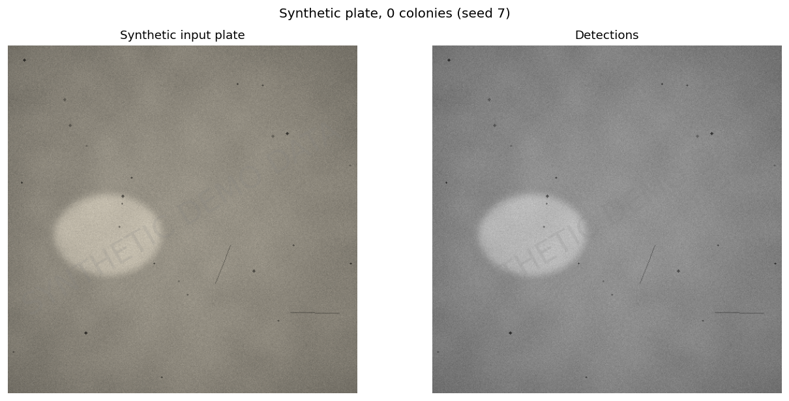
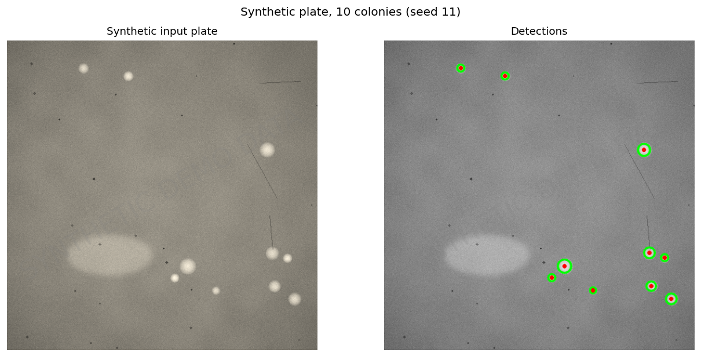
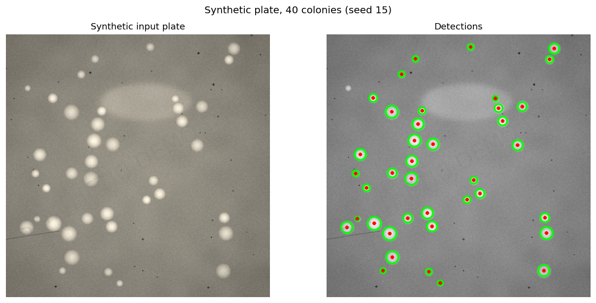
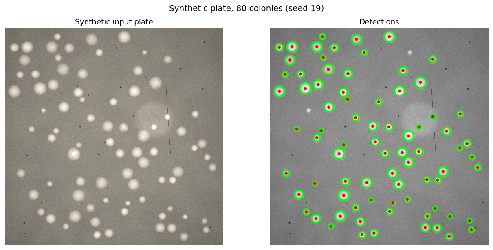
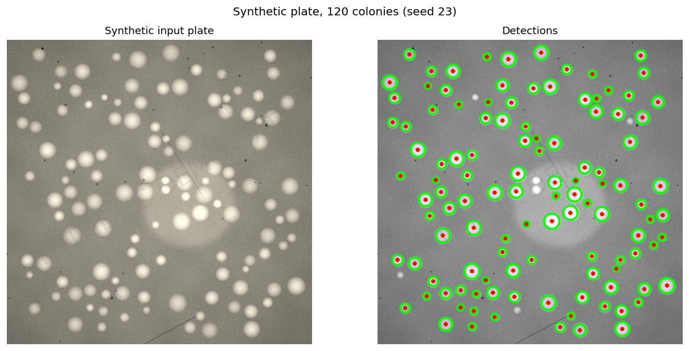
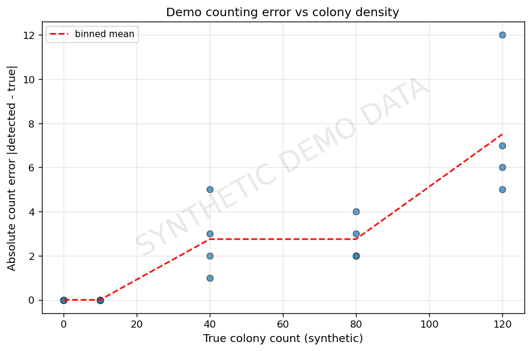
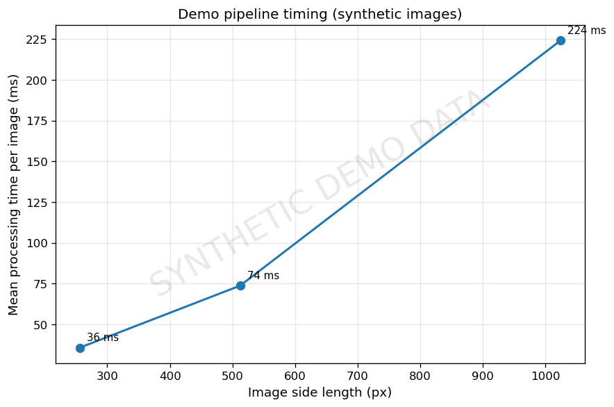
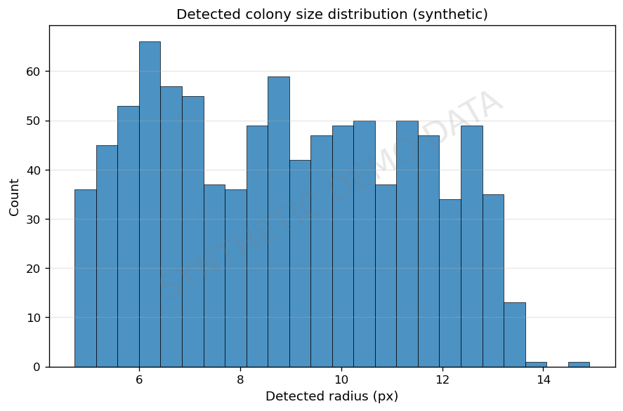

Educational demonstration of the detection/vision side of an IoT rapid-detection kit: synthetic plate images → classical OpenCV pipeline (no machine learning) → colony counting with known ground truth. Companion to the sensor-to-cloud pipeline simulator (project #2).
* Precision/recall measured against synthetic ground truth only — NOT a claim about real-world performance.








Everything in this repository is synthetic: the images are procedurally generated, the "colonies" are drawn blobs, and every metric measures the demo pipeline on that synthetic data. It is inspired by the architecture of Bilal Ahmad's CISNR Junior Research Engineer work (Dec 2022 – Feb 2024) on an E. coli rapid-detection kit, but it is not the actual CISNR system, contains none of its data, and makes no claim about real detection accuracy.